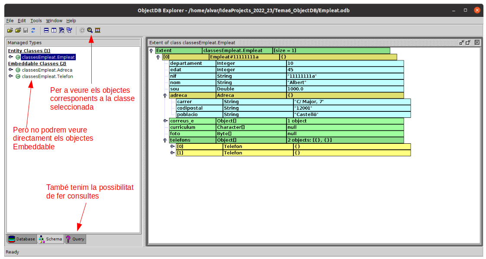

3.4.2 Funcionalitat bàsica
Farem les proves en un projecte nou, anomenat Tema6_ObjectDB. Sobre ell ens crearem les mateixes classe que en l'exemple de DB4O, però aprofitarem per a fer les anotacions necessàries per a ObjectDB.
Al projecte incorporarem l'únic driver necessari per a poder accedir
objectdb.jar
Per organitzar-lo millor creem un paquet anomenat classesEmpleat , que ens servirà per a fer tots els exemples. Ens crearem la classe Empleat, i les classes Adreca i Telefon que utilitzarà aquella. Construïm les classes de la manera més còmoda, i aprofitarem per a posar anotacions, necessàries per a poder utilitzar ObjectDB, i que són molt similars a les anotacions que fèiem en el tema anterior amb Hibernate, ja que en aquell moment també utilitzàvem JPA. Les anotacions que utilitzarem seran:
- @Entity abans de la classe que volem gfer persistent
- @Embeddable abans d'una classe que s'incrustarà en una altra
- @Id aband de la propietat que actuarà com a identificador a de la classe (com si fóra la clau principal)
Podríem fer totes les classes com a @Entity, per a poder guardar-les de forma independent, i poder buscar-les també de forma independent (seria en cas de l'exemple de les comarques, poblacions i instituts). En aquest cas ens convé més que tant Adreca com Telefon siguen incrustades (embedded), ja que no té sentit una adreça ni telèfon sense tenir l'empleat. Açò farà que siga més còmoda la seua inserció. En canvi ens dificultaria les consultes si vulguérem buscar per adreces o telèfons, però no és aquest el cas
@Entity
class Empleat (
@Id var nif: String?, var nom: String?, var departament: Int?, var edat: Int? = 0, var sou: Double? = 0.0,
var foto: Array<Byte>?,
var curriculum: Array<Char>?,
var adreca: Adreca?,
var correus_e: Array<String>?,
var telefons : Array<Telefon>?
)I ara posarem Adreca i Telefon com @Embeddable. No té sentit definir cap propietat com a @Id, ja que cada adreça i telèfon s'incrustarà dins de l'empleat corresponent
@Embeddable
class Adreca (var carrer: String?, var codipostal: String?, var poblacio: String?)
@Embeddable
class Telefon( var mobil : Boolean , var numero: String)Connexió
Utilitzem la API JPA. En ella s'utilitza el EntityManager, a la qual li fa falta un Factory. Resumit en una sentència quedaria així:
val bd = Persistence.createEntityManagerFactory("Empleat.odb").createEntityManager()Inserció
Per a guardar un objecte utilitzem el mètode persist(objecte)
Provem a introduir un empleat. Guardeu el següent programa en Exemple1_InserirEmpleat.kt. Guardeu-lo en el paquet exemples
import classesEmpleat.Adreca
import classesEmpleat.Empleat
import classesEmpleat.Telefon
import javax.persistence.Persistence
fun main() {
val bd = Persistence.createEntityManagerFactory("Empleat.odb").createEntityManager()
bd.transaction.begin()
var e = Empleat("11111111a","Albert",10,45,1000.0,null,null,null,null,null)
// les dades més complicades les introduïm de forma especial
e.adreca = Adreca("C/ Major, 7", "12001", "Castelló")
e.correus_e = arrayOf("alu11111111a@ieselcaminas.org")
e.telefons = arrayOf(Telefon(true, "666777888"), Telefon(false, "964112233"))
bd.persist(e);
bd.transaction.commit()
bd.close();
}Com veiem necessita una transacció per a poder fer persistents les dades
Per a poder visualitzar les dades introduïdes, lamentablement no ho podem fer des de l'entorn de IntelliJ. Ens farà falta l'explorador de ObjectDB. Executem explorer.sh (explorer.exe en Windows).
Observarem que ha detectat l'última connexió feta a una Base de Dades ObjectDB i ja la tindrem oberta:

En finalitzar d'observar les dades és convenient tancar la connexió. Si no la tanquem, quan anem a executar qualsevol programa que accedisca, ens donarà error, avisant que la Base de Dades estàsent utilitzada per un altre usuari.
Per tant, haurem de tenir especial atenció a tancar la connexió a la Base de Dades. Podria passar que ens donara un error el programa, i la connexió s'haja quedat oberta. Segurament el més oportú serà intentar tancar el programa, o tancar IntelliJ, i d'aquesta manera desbloquejarem la Base de Dades.
El mètode commit obliga a guardar les dades cap al contenidor i activa de nou una transacció per a les properes operacions, per tant és convenient anar utilitzant-lo després d'una sèrie d'actualitzacions.
Anem a posar algunes dades més, per a tenir un poc més de joc. Concretament seran dues empleades més. Copieu el següent codi al fitxer Exemple1_1_InserirMesEmpleats.kt:
import classesEmpleat.Adreca
import classesEmpleat.Empleat
import classesEmpleat.Telefon
import javax.persistence.Persistence
fun main() {
val bd = Persistence.createEntityManagerFactory("Empleat.odb").createEntityManager()
bd.transaction.begin()
val e = Empleat("22222222b", "Berta", 10, 35, 1700.0, null, null, null, null, null)
val f = Empleat("33333333c", "Clàudia", 20, 37, 1500.0, null, null, null, null, null)
//les dades més complicades les introduïm de forma especial
e.adreca = Adreca ("C/ Enmig, 7", "12001", "Castelló")
val corr = arrayOf( "alu22222222b@ieselcaminas.org", "berta@gmail.com" )
e.correus_e = corr
val tels = arrayOf(Telefon(true,"666555444"), Telefon(false,"964223344"))
e.telefons = tels
f.adreca = Adreca ("C/ de Dalt, 7", null, "Borriana")
val corr2 = arrayOf("alu33333333c@ieselcaminas.org")
f.correus_e = corr2
bd.persist(e)
bd.persist(f)
bd.transaction.commit()
bd.close();
}Consulta bàsica
Afortunadament ObjectDB fa les consultes molt més senzilles i potents que DB4O.
En primer lloc per obtenir un objecte podem utilitzar el mètode get(classe, id), al qual li passem la classe que volem llegir i un valor per a la propietat definida com identificador. És igual que en Hibernate, ja que també utilitza JPA.
En el següent exemple es veu com una vegada obtingut l'objecte, es pot accedir molt fàcilment a tota la informació. Copieu-lo al fitxer Kotlin Exemple2_ConsultaUnEmpleat.kt
import classesEmpleat.Empleat
import javax.persistence.Persistence
fun main() {
val bd = Persistence.createEntityManagerFactory("Empleat.odb").createEntityManager()
val e = bd.getReference(Empleat::class.java,"11111111a")
println(
"Nif: " + e.nif + ". Nom: " + e.nom + ". Població: " + e.adreca?.poblacio
)
if (e.correus_e != null)
print("Primer correu: " + e.correus_e?.get(0) + ".")
if (e.telefons != null)
print("Primer telèfon: " + e.telefons!![0].numero + ".")
println()
bd.close();
}
Observeu com no hem utilitzat un bucle per a recórrer la llista, sinó un if. Això és perquè en aquest cas concret sabem a priori que en cas de trobar alguna instància, només serà una. Aquest seria el resultat:
Nif: 11111111a. Nom: Albert. Població: Castelló
Primer correu: alu11111111a@ieselcaminas.org. Primer telèfon: 666777888.
Esborrat
Per a poder fer una actualització o esborrat d'algun objecte de la Base de Dades, aquest s'ha de correspondre amb algun objecte del programa Java o Kotlin, és a dir, l'objecte ha de ser persistent. Aquesta correspondència pot ser perquè un objecte nou l'hem guardat amb persist() (i continua "viu"), o perquè l'hem llegit de la BD.
L’eliminació dels objectes s’aconsegueix amb el mètode remove(). Evidentment esborrarà també tot el que estiga incrustat, en el nostre exemple l'adreça i els telèfons. Distint seria si no els tinguérem incrustat, però no és el cas.
Mirem un exemple en el qual esborrem un empleat. Guardeu el que va a continuació en el fitxer Exemple3_Esborrat.kt:. Hem de recordar que tota actualització requereix una transacció:
import classesEmpleat.Empleat
import javax.persistence.Persistence
fun main() {
val bd = Persistence.createEntityManagerFactory("Empleat.odb").createEntityManager()
bd.transaction.begin()
val e = bd.getReference(Empleat::class.java,"22222222b")
bd.remove(e)
bd.transaction.commit()
bd.close()
}Modificació
Per a modificar un objecte de la Base de Dades primer haurem de tenir un objecte de Java que es corresponga amb ell (igual que en l'esborrat). Com en les altres ocasions, haurem de tenir una transacció en marxa, però ara ni tan sols fa falta fer-lo persistent expressament. Si modifiquem un objecte, en el moment de fer commit es guardarà, es farà persistent.
Copieu el següent codi en un fitxer Kotlin anomenat Exemple4_Modificar.kt :
import classesEmpleat.Empleat
import javax.persistence.Persistence
fun main() {
val bd = Persistence.createEntityManagerFactory("Empleat.odb").createEntityManager()
bd.transaction.begin()
val e = bd.getReference(Empleat::class.java,"11111111a")
if (e.sou != null) {
e.sou = e.sou.toString().toDouble() + 200.0
}
val adr = e.adreca
adr?.carrer = "Pl. Rei en Jaume, 15"
adr?.codipostal = "12002"
e.adreca = adr
bd.transaction.commit()
bd.close()
}Llicenciat sota la Llicència Creative Commons Reconeixement NoComercial CompartirIgual 2.5